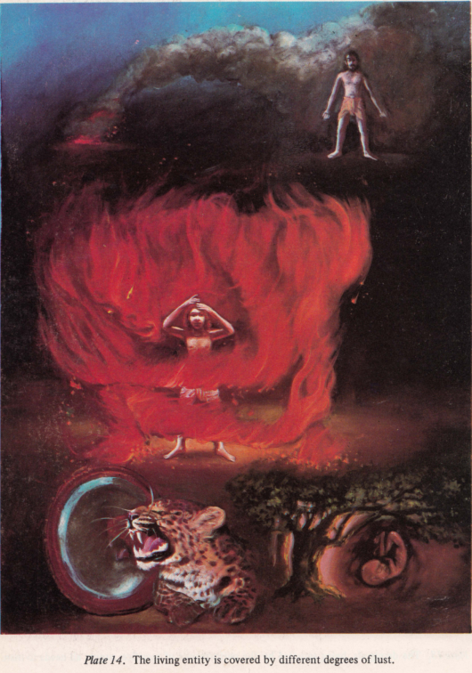

3.37

śrī-bhagavān uvāca
kāma eṣa krodha eṣa
rajo-guṇa-samudbhavaḥ
mahāśano mahā-pāpmā
viddhy enam iha vairiṇam
śrī bhagavān uvāca—the Personality of Godhead said; kāmaḥ—lust; eṣaḥ—all these; krodhaḥ—wrath; eṣaḥ—all these; rajo-guṇa—the mode of passion; samudbhavaḥ—born of; mahā-śanaḥ—all-devouring; mahā-pāpmā—greatly sinful; viddhi—know; enam—this; iha—in the material world; vairiṇam—greatest enemy.
TRANSLATION
The Blessed Lord said: It is lust only, Arjuna, which is born of contact with the material modes of passion and later transformed into wrath, and which is the all-devouring, sinful enemy of this world.
PURPORT
When a living entity comes in contact with the material creation, his eternal love for Kṛṣṇa is transformed into lust, in association with the mode of passion.
Or, in other words, the sense of love of God becomes transformed into lust, as milk in contact with sour tamarind is transformed into yogurt.
Then again, when lust is unsatisfied, it turns into wrath; wrath is transformed into illusion, and illusion continues the material existence.
Therefore, lust is the greatest enemy of the living entity, and it is lust only which induces the pure living entity to remain entangled in the material world.
Wrath is the manifestation of the mode of ignorance; these modes exhibit themselves as wrath and other corollaries.
If, therefore, the modes of passion, instead of being degraded into the modes of ignorance, are elevated to the modes of goodness by the prescribed method of Iiving and acting, then one can be saved from the degradation of wrath by spiritual attachment.
The Supreme Personality of Godhead expanded Himself into many for His ever-increasing spiritual bliss, and the living entities are parts and parcels of this spiritual bliss.
They also have partial independence, but by misuse of their independence, when the service attitude is transformed into the propensity for sense enjoyment, they come under the sway of lust.
This material creation is created by the Lord to give a facility to the conditioned souls to fulfill these lustful propensities, and when they are completely baffled by prolonged lustful activities, the living entities begin to inquire about their real position.
This inquiry is the beginning of the Vedānta-sūtras, wherein it is said, athāto brahma-jijñāsā: one should inquire into the Supreme.
And the Supreme is defined in Śrīmad-Bhāgavatam as janmādyasya yato ’nvayād itarataś ca, or, “The origin of everything is the Supreme Brahman.”
Therefore, the origin of lust is also in the Supreme.
If, therefore, lust is transformed into love for the Supreme, or transformed into Kṛṣṇa consciousness—or, in other words, desiring everything for Kṛṣṇa—then both lust and wrath can be spiritualized.
Hanumān, the great servitor of Lord Rama, engaged his wrath upon his enemies for the satisfaction of the Lord.
Therefore, lust and wrath, when they are employed in Kṛṣṇa consciousness, become our friends instead of our enemies.